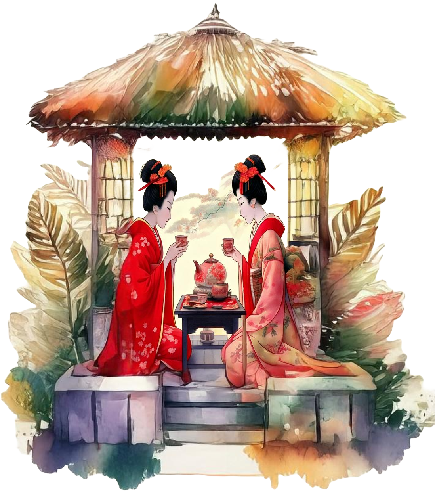
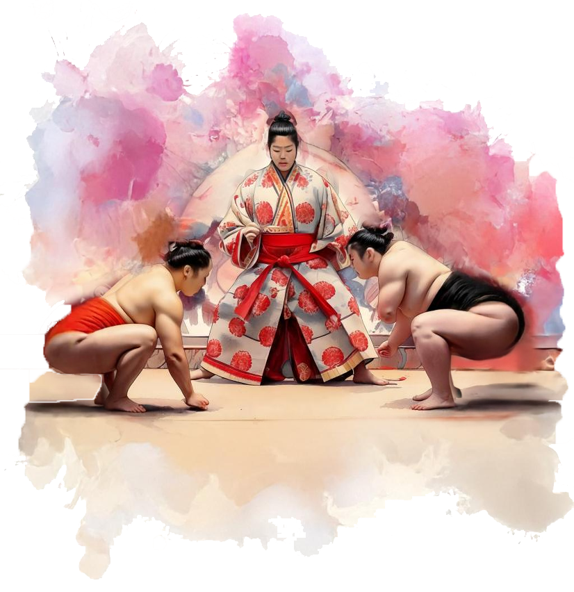

Traditions |
|
The Art of the
|
 |
|  |
The Legacy of
|
The Elegance of Japanese CalligraphyMore than just writing, Japanese calligraphy is a beautiful art form that blends brushstrokes with deep meaning. Each character is a masterpiece, reflecting the artist’s emotions and skill. |